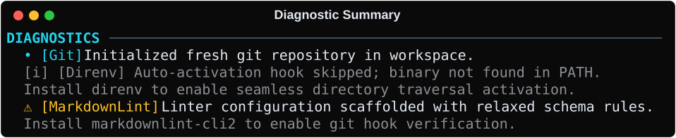

The Orchestrator¶
The Orchestrator coordinates the two-phase execution lifecycle for Protostar. It is responsible for bridging the gap between declarative module configurations and imperative disk/shell mutations, ensuring the local filesystem is manipulated safely and predictably.
To guarantee idempotency and prevent partial initialization states (e.g., half-written configuration files following a pre-flight failure), the Orchestrator enforces a strict, multi-phase execution lifecycle.
Execution Lifecycle¶
The Orchestrator enforces a strict separation between read-only state aggregation and physical side effects (the Headless Core). The core engine is purely headless: it ingests caller intent via an InitRequest, calculates the complete environment manifest via plan(), and mutates the workspace via execute(), returning an immutable ExecutionResult.
All terminal interaction (collision prompts, remote trust confirmations, the progress trail) is isolated in the CLI presentation layer (cli.py).
flowchart TD
classDef boundary fill:#0f172a,stroke:#38bdf8,stroke-width:1px,color:#e2e8f0;
classDef phase fill:#1e293b,stroke:#1e293b,stroke:#00e5ff,stroke-width:2px,color:#fff;
classDef state fill:#334155,stroke:#7c4dff,stroke-width:2px,color:#fff;
classDef error fill:#7f1d1d,stroke:#f87171,stroke-width:1px,color:#fff;
classDef success fill:#14532d,stroke:#4ade80,stroke-width:1px,color:#fff;
Req([InitRequest]):::boundary --> Plan["Phase 1: plan()<br/>• uv and git verification<br/>• Manifest aggregation<br/>• Manifest-first collision checks"]:::phase
Plan -->|Validation Failure| Err["Raise ProtostarError<br/>(Caught by CLI Presentation Layer)"]:::error
Plan -->|Plan Validated| Manifest[(EnvironmentManifest)]:::state
Manifest -->|--dry-run / --json| DryRun([Serialize Manifest / Dry Run]):::boundary
Manifest -->|Live Execution| Exec["Phase 2: execute()<br/>• Reconcile managed configuration<br/>• Scaffold directories & inject files<br/>• Execute managed subprocesses"]:::phase
Exec --> Result([ExecutionResult]):::successThe Lifecycle Phases¶
The plan() phase calculates the target state and verifies safety without performing disk mutations:
- Executable Check: Asserts workspace accessibility and clean/git repository status, fails if a binary Protostar itself runs (
uvorgit) is missing from$PATH, and records each binary an enabled tool declares inexecutablesbut$PATHlacks inmanifest.missing_tools. - Manifest Aggregation: Evaluates language and tooling modules to populate an
EnvironmentManifestwith file injections, AST merge payloads, ignore patterns, and system tasks. - Blueprint Injection: Injects any template blueprint files and configurations into the manifest with variable interpolation.
- Manifest-First Collision Check: Derives planned target files via
manifest.target_files()and records existing targets inmanifest.collisions. Planning returns the manifest even if a collision choice is pending.
When the manifest lists collisions or an untrusted external template's run executes commands:
- Interactive CLI: In interactive terminals, the CLI prompts you to
Merge,Overwrite, orAbort. If authorized, it updates the request's collision strategy and callsplan()again. - Headless Contexts: In non-interactive environments (CI/CD),
cli.pyaborts safely with an error message instructing you to supply--force-mergeor--force-replace.
The execute() phase hands the calculated manifest to SystemExecutor to apply all side effects in a deterministic, transaction-managed sequence:
Before creating the executor, it raises WorkspaceCollisionError(paths=...) if the manifest has collisions and no strategy.
- Validates existing TOML files for syntax errors.
- Scaffolds directories and writes files via
TransactionAwareFS. - Modifies configurations via AST deep-merging.
- Writes deduplicated ignore files and Docker artifacts.
- Pre-journals
pyproject.tomlanduv.lock, then resolves dependencies viauv add(failures are fatal). - Writes local IDE settings.
- Executes system tasks and post-install subprocesses via
ProcessRunner. - Verifies IDE extensions and commits the transaction journal.
The initial scaffold and every subprocess run inside a step of the optional progress hook passed to execute(), which the CLI renders as a persistent checklist. The engine only names each step; it never renders one.
If an exception occurs or the user interrupts execution (KeyboardInterrupt), the executor automatically terminates managed subprocesses and rolls back all journaled workspace paths. See Rollback Internals for the full guarantee model and failure semantics.
Diagnostics & Crash Reporting¶
During planning and execution, non-fatal skips and warnings (e.g., missing optional binaries like direnv or skipped optional tasks) are recorded into ExecutionResult.diagnostics. The CLI presentation layer renders these events in a structured summary panel upon completion:

For unexpected internal exceptions or AST parsing failures, the runtime traps errors at the CLI boundary to generate pre-filled GitHub crash reports without corrupting the workspace. For complete details on the exception hierarchy, POSIX exit code mappings, and crash issue generation, see the Error Handling Architecture.
API Reference¶
Caller Intent: InitRequest
protostar.models.InitRequest
dataclass
¶
Declarative intent from the caller for a scaffolding run.
Attributes:
| Name | Type | Description |
|---|---|---|
one_shot |
bool
|
Scaffold without persisting the recipe or ownership state. |
template_blueprint |
TemplateBlueprint | None
|
An optional pre-loaded template blueprint to apply. |
python_version |
str | None
|
An optional Python version string (e.g. '3.13'). Informational; the modules list is already constructed with the resolved version. |
collision_strategy |
CollisionStrategy | None
|
Explicit policy for existing workspace files. |
metadata |
dict[str, Any] | None
|
Pre-resolved metadata dictionary to inject into the manifest. |
is_external |
bool
|
If True, the template was loaded from an external source. |
is_user_aliased |
bool
|
If True, the template was resolved via a global config alias. |
is_trusted |
bool
|
If True, the template source is explicitly trusted to execute tasks. |
Source code in src/protostar/models.py
to_dict ¶
Serializes caller intent without trust or secret metadata.
Source code in src/protostar/models.py
Execution Outcome: ExecutionResult
protostar.models.ExecutionResult
dataclass
¶
Observed outcome returned by Orchestrator.execute().
Attributes:
| Name | Type | Description |
|---|---|---|
created_paths |
frozenset[str]
|
Immutable set of relative paths created on disk. |
mutated_paths |
frozenset[str]
|
Immutable set of relative paths modified on disk. |
diagnostics |
tuple[DiagnosticEvent, ...]
|
Ordered tuple of non-fatal diagnostic events emitted during execution. |
missing_tools |
frozenset[MissingTool]
|
Executables enabled tools run that were missing from
|
Source code in src/protostar/models.py
to_dict ¶
Serializes the execution result to a JSON-safe dictionary.
The touched_paths frozenset is emitted as a sorted list for deterministic
output. Each diagnostic event is emitted as an explicit dict; the optional
detail field is omitted when absent to keep payloads compact.
Returns:
| Type | Description |
|---|---|
dict[str, Any]
|
A JSON-serializable dictionary representation. |
Source code in src/protostar/models.py
Core Interface: Orchestrator
protostar.orchestrator.Orchestrator ¶
Manages the lifecycle of the Python environment scaffolding process.
The orchestrator provides a strict two-phase API: - plan(): Evaluates the workspace state and assembles a declarative EnvironmentManifest without mutating the filesystem. - execute(): Takes an already-built manifest and realizes it on disk.
This separation guarantees that plan() is always safe to retry (it instantiates a fresh manifest on every call), and that execute() never performs planning, collision detection, or user interaction.
Source code in src/protostar/orchestrator.py
57 58 59 60 61 62 63 64 65 66 67 68 69 70 71 72 73 74 75 76 77 78 79 80 81 82 83 84 85 86 87 88 89 90 91 92 93 94 95 96 97 98 99 100 101 102 103 104 105 106 107 108 109 110 111 112 113 114 115 116 117 118 119 120 121 122 123 124 125 126 127 128 129 130 131 132 133 134 135 136 137 138 139 140 141 142 143 144 145 146 147 148 149 150 151 152 153 154 155 156 157 158 159 160 161 162 163 164 165 166 167 168 169 170 171 172 173 174 175 176 177 178 179 180 181 182 183 184 185 186 187 188 189 190 191 192 193 194 195 196 197 198 199 200 201 202 203 204 205 206 207 208 209 210 211 212 213 214 215 216 217 218 219 220 221 222 223 224 225 226 227 228 229 230 231 232 233 234 235 236 237 238 239 240 241 242 243 244 245 246 247 248 249 250 251 252 253 254 255 256 257 258 259 260 261 262 263 264 265 266 267 268 269 270 271 272 273 274 275 276 277 278 279 280 281 282 283 284 285 286 287 288 289 290 291 292 293 294 295 296 297 298 299 300 301 302 303 304 305 306 307 308 309 310 311 312 313 314 315 316 317 318 319 320 321 322 323 324 325 326 327 328 329 330 331 332 333 334 335 336 337 338 339 340 341 342 343 344 345 346 347 348 349 350 351 352 353 354 355 356 357 358 359 360 361 362 363 364 365 366 367 368 369 370 371 372 373 374 375 376 377 378 379 380 381 382 383 384 385 386 387 388 389 390 391 392 393 394 395 396 397 398 399 400 401 402 403 404 405 406 407 408 409 410 411 412 413 414 415 416 417 418 419 420 421 422 423 424 425 426 427 428 429 430 431 432 433 434 435 436 437 438 439 440 441 442 443 444 445 446 447 448 449 450 451 452 453 454 455 456 457 458 459 460 | |
__init__ ¶
Initializes the orchestrator with the requested modules and intent.
Parameters:
| Name | Type | Description | Default |
|---|---|---|---|
modules
|
list[BootstrapModule]
|
The ordered stack of bootstrap layers to apply. |
required |
user_config
|
UserConfig
|
The active UserConfig instance. |
required |
request
|
InitRequest | None
|
Optional InitRequest describing caller intent. Defaults to a no-op InitRequest if omitted. |
None
|
Source code in src/protostar/orchestrator.py
plan ¶
Evaluates workspace state and assembles a declarative EnvironmentManifest.
A fresh EnvironmentManifest is instantiated on every call, guaranteeing that retries (e.g. after a collision resolution) start from a clean slate.
An enabled tool's executable missing from PATH never fails planning:
it is recorded in missing_tools, and the tool's module skips the
steps that run it.
Parameters:
| Name | Type | Description | Default |
|---|---|---|---|
check_executables
|
bool
|
Whether to require the executables Protostar itself runs. Only callers that never execute the plan, such as a read-only review, skip the check. |
True
|
Raises:
| Type | Description |
|---|---|
ConfigurationError
|
If conflicting modules or missing prerequisites are detected, or the project's state records another template. |
MissingDependencyError
|
If an executable Protostar itself runs is missing. |
Returns:
| Type | Description |
|---|---|
EnvironmentManifest
|
A populated EnvironmentManifest ready to be passed to execute(). |
Source code in src/protostar/orchestrator.py
99 100 101 102 103 104 105 106 107 108 109 110 111 112 113 114 115 116 117 118 119 120 121 122 123 124 125 126 127 128 129 130 131 132 133 134 135 136 137 138 139 140 141 142 143 144 145 146 147 148 149 150 151 152 153 154 155 156 157 158 159 160 161 162 163 164 165 166 167 168 169 170 171 172 173 174 175 176 177 178 179 180 181 182 183 184 185 186 187 188 189 190 191 192 193 194 195 196 197 198 199 200 201 202 203 204 205 206 207 208 209 210 211 212 213 214 215 216 217 218 219 220 221 222 223 224 225 226 227 228 229 230 231 232 233 234 235 236 237 238 239 240 241 242 243 244 245 246 247 248 249 250 251 252 253 254 255 256 257 258 259 260 261 262 263 264 265 266 267 268 269 270 271 272 273 274 275 276 277 278 279 280 281 282 283 284 285 286 287 288 289 290 291 292 293 294 295 296 297 298 299 300 301 302 303 304 305 306 307 308 309 310 311 312 313 314 315 316 317 318 319 320 321 322 323 324 325 326 327 328 329 330 331 332 333 334 335 336 337 338 339 340 341 342 343 344 345 346 347 348 349 350 351 352 353 354 355 356 357 358 359 360 361 362 363 364 365 366 367 368 369 370 371 372 373 374 375 376 377 378 379 380 381 382 383 384 385 386 387 388 | |
execute ¶
Realizes the pre-built manifest on disk.
Takes an already-built manifest from plan() and executes it. Performs no planning, collision detection, template resolution, or user interaction.
Parameters:
| Name | Type | Description | Default |
|---|---|---|---|
manifest
|
EnvironmentManifest
|
The populated EnvironmentManifest to execute. |
required |
hook_revisions
|
tuple[ResolvedHookRevision, ...] | None
|
The registry snapshot a review showed, so execution writes the same hook pins. Without one, execution takes its own. |
None
|
progress
|
ProgressStep
|
Brackets each presentable execution step for the caller. |
no_progress
|
resolutions
|
Resolutions
|
Choices the change review made for the conflicts it showed, keyed by conflict identity. |
NO_RESOLUTIONS
|
Raises:
| Type | Description |
|---|---|
ExecutionInterruptedError
|
If the user interrupts execution after disk mutations have already begun. |
Returns:
| Type | Description |
|---|---|
ExecutionResult
|
An ExecutionResult describing what was touched and any diagnostics. |
Source code in src/protostar/orchestrator.py
Related Mechanics & Guides¶
- The Environment Manifest: Deep dive into the structured state container generated during the
plan()phase. - The System Executor: See how the executor applies atomic AST deep-merges, file injections, and subprocess execution.
- Error Handling Architecture: Learn how the orchestrator traps exceptions and routes them to POSIX exit codes and crash reports.